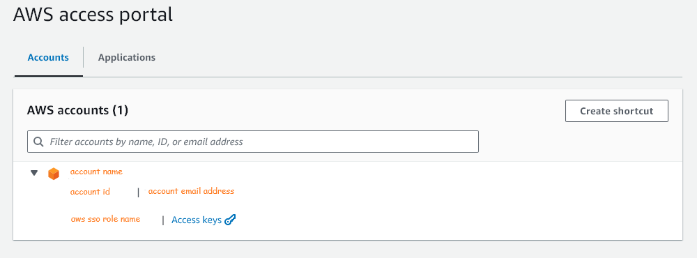
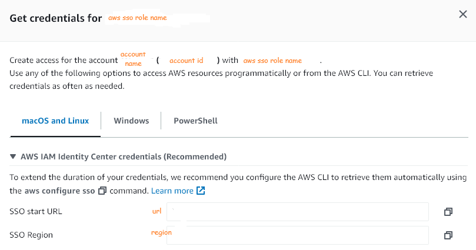

Amazon Web Services#
After connecting to an Amazon Web Services (AWS) account, directly or via an identity service, the AWS access portal screen appears. The details therein are critical to setting up programmatic access to AWS directly.
Programmatic Access#
Install AWS CLI#
Foremost, install AWS CLI (Command Line Interface). If using a machine that has Windows Subsystem for Linux, install aws cli within Windows, and relevant Linux Kernels, however all the steps below should be repeated within Windows; all outcomes propagate to Linux Kernels.
Basic Configuration#
Via key parameters and arguments.

The key values of the aws configure parameters are set via the directives below. Use the image above, and below, to determine most of the parameter values, i.e., the values in brackets.
aws configure set sso_session {sso.session.string} --profile default
aws configure set sso_account_id {account id} --profile default
aws configure set sso_role_name {aws sso role name} --profile default
aws configure set region {region} --profile default
aws configure set output {output.string} --profile default
Note, the value of the sso_session parameter is user dependent. It is a string that names a session, e.g., to name a session alpha
aws configure set sso_session alpha --profile default
There are a few output value options, e.g.,
aws configure set output json --profile default
or
aws configure set output yaml --profile default
Single Sign On (SSO) Configuration#
The image above has a link named Access keys; each account within a portal page will have its own Access keys link. Within your AWS access portal, click on the Access keys link of the account of interest. A pop-up, similar to

Hence, to configure/set single sign on settings, type
aws configure sso
Subsequently, and aided by the image above, answer the questions below
SSO session name [sso.session.string]: {sso.session.string}
SSO start URL [None]: {url}
SSO region [None]: {region}
SSO registration scopes [sso:account:access]: sso:account:access
Hence, Programmatic Single Sign On (SSO)#
aws sso login --profile {profile.name}
Testing Programmatic Access#
Via Command Line#
aws s3 ls
Listing the images of an Amazon ECR (Elastic Container Registry) repository of an account.
aws ecr list-images --registry-id {account.identifer} --repository-name {repository.name}
Via Software Programs#
Note
A link is upcoming.
References#
- AWS CLI with IAM Identity Centre
- IAM (Identity & Access Management) Roles
- Amazon Web Services Managed Policies
- Changing or setting a region